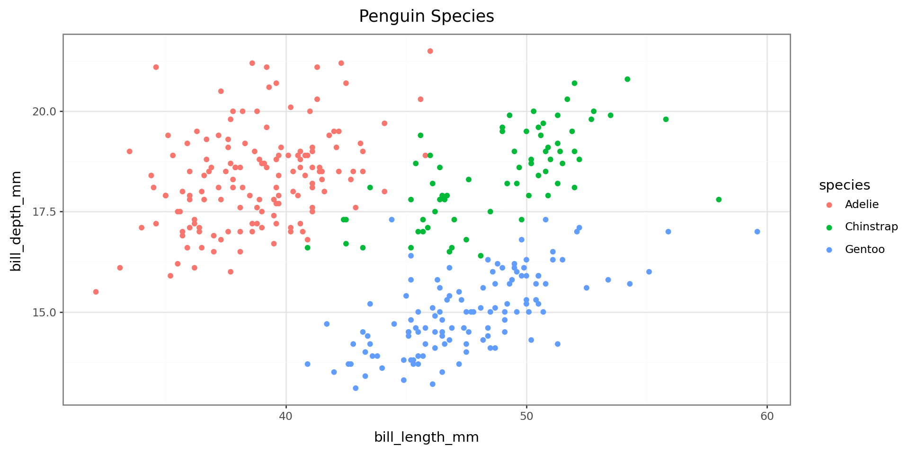
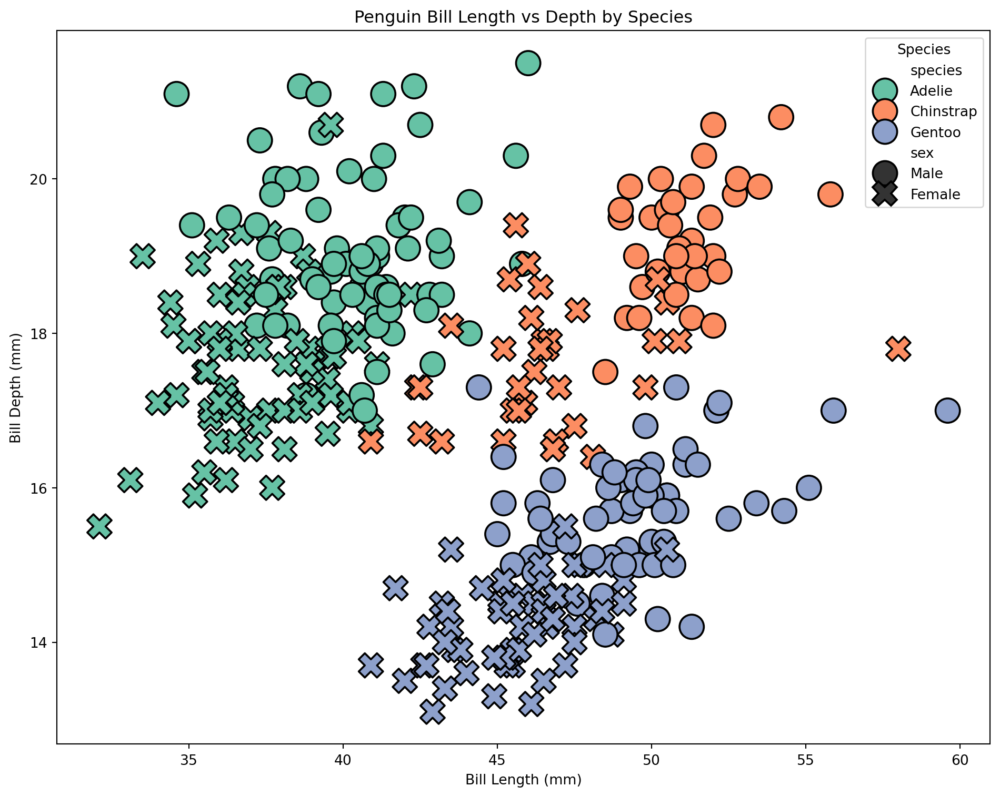
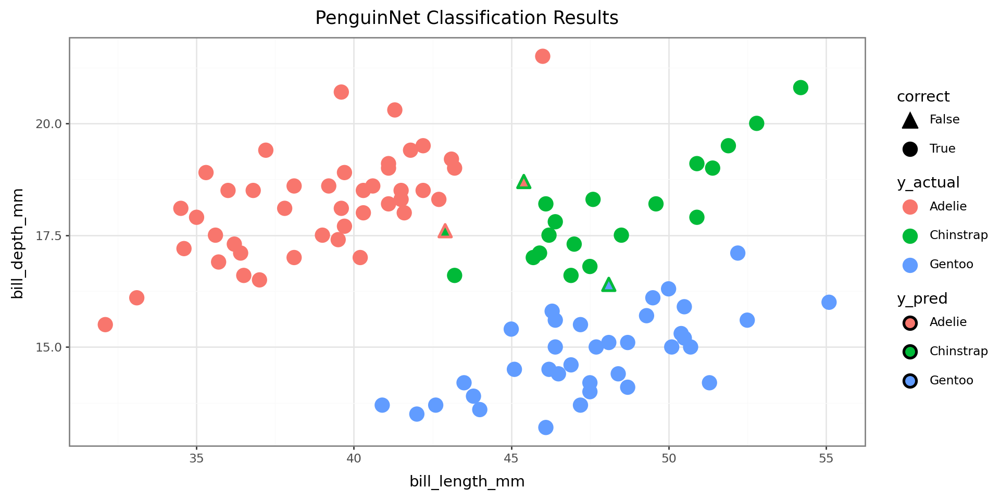

class Dog: ## begin class definition
def __init__(self, name, breed): ## define init method
self.name = name ## add attributes
self.breed = breed
def speak(self): ## add methods
return f"{self.name} says woof!"
def __str__(self): # __str__(self) tells python what to display when an object is printed
return f"Our dog {self.name}"
def __repr__(self): # add representation to display when dog is called in console
return f"Dog(name={self.name!r}, breed={self.breed!r})"Session 4 – Object-Oriented Programming and Modeling Libraries
Session Overview
In this session, we’ll cover object-oriented programming and how it applies to modeling and analysis workflows in Python.
- Intro to OOP and how it makes modeling in Python different from R
- Building and extending classes using inheritance and mixins
- Applying OOP to machine learning through demos with scikit-learn and PyTorch
- Creating and using models
-
Plotting data with
plotnineandseaborn
Introduction
Why Python Feels Different from R 🐍
R: Built by Statisticians
Designed for statistical analysis
Workflows are primarily functional:
- pass data into functions
- get back results (usually without modifying the original object)
Pipes (
|>,%>%) chain operationsExcels at:
- clean model outputs, tables and high-quality visualizations
Python: General-Purpose Language
Designed for many domains, not just statistics
Leans heavily on object-oriented programming:
- Some methods modify objects in-place, rather than returning new ones
- Some methods modify objects in-place, rather than returning new ones
Methods chaining (.fit().predict())
Excels at:
- machine learning & deep learning (scikit-learn, PyTorch)
- image, genomic, and single-cell analysis
- software, automation, and tooling
- machine learning & deep learning (scikit-learn, PyTorch)
💡 You’ve already been using this style in Sessions 2 and 3 — creating objects (lists, DataFrames) and calling methods like
.append()or.sort_values(). Note: Tools likereticulateandrpy2allow R and Python to coexist in the same project, but that’s beyond the scope of this course.
Core OOP Principles in Python
Classes and objects
- An object (instance) has attributes (data) and methods (behaviors)
- A class is a blueprint for objects
- Use
type(obj)andisinstance(obj, Class)to inspect objects in code
Python’s object-oriented design builds on a few key principles of how objects behave:
Encapsulation — Data and behaviors live together
- Attributes store data, methods define behaviors
Inheritance — New classes reuse existing functionality
- Classes can inherit attributes and methods from parent classes.
- Avoids re-writing shared logic
- Classes can inherit attributes and methods from parent classes.
Abstraction — Same interface hides complexity
- Interact with what things do, not how they work.
Polymorphism (Duck Typing) — Different objects with the same methods can be used interchangeably
- This makes it easy to switch between models with minimal code adjustment
Why OOP Matters for Python Modeling
In Python modeling frameworks:
- Models are objects (class instances)
- They have methods like
.fit(),.predict(),.score()
- Learned parameters (coefficients, weights, layers) live in attributes
This consistent object-oriented API makes it easy to swap models with minimal code changes.
Examples of Python modeling libraries:
scikit-learn— general ML (classification, regression)
xgboost— gradient boosting
scikit-survival— survival models using sklearn API
statsmodels— statistical models with R-like outputs
scvi-tools— single-cell models
PyTorch/TensorFlow— deep learning frameworks
Understanding classes is ESPECIALLY important for using PyTorch and TensorFlow!
Bonus: Python Modeling Libraries — Tutorials & Docs
scikit-learn (ML basics) — official API & guide (general modeling) https://scikit-learn.org/stable/user_guide.html
xgboost (gradient boosting) — official documentation with examples/tutorials https://xgboost.readthedocs.io/ (look under Tutorials)
scvi-tools (probabilistic single-cell modeling) — user guide + tutorials https://docs.scvi-tools.org/en/stable/ (Tutorials section)
scikit-survival (survival analysis with sklearn API) — user guide & intro notebook https://scikit-survival.readthedocs.io/en/stable/ (00-introduction tutorial)
statsmodels (statistical modeling & inference) — getting started & examples https://www.statsmodels.org/stable/gettingstarted.html Also see: https://www.statsmodels.org/stable/examples/index.html
OOP In Practice: Creating Classes
- To really understand how object-oriented programming works, let’s create some simple classes and see how they behave.
- While the following examples are really simple, they showcase the same concepts used when designing the kinds of Python libraries you’ll be using
- If you work with PyTorch or TensorFlow you will likely be making model classes yourself
Base Classes
A base class serves as a template for creating objects. Other classes can inherit from it to reuse its attributes and methods.
Classes are defined using the class keyword, and their structure is specified using an __init__() method for initialization.
Define a Dog with attributes (data) and methods (behaviors).
* special or “dunder” methods (short for double underscore) define how objects behave in certain contexts.
Creating a dog
Creating an instance of the Dog class lets us model a particular dog:
Buddy is an object of class <class '__main__.Dog'>-
Set value of attributes [
nameandbreed] -> stored as part ofbuddy -
buddycan use anyDogclass methods
Our dog Buddy is a Golden Retriever.
Buddy says woof!Dog(name='Buddy', breed='Golden Retriever')Note: For python methods, the self argument is assumed to be passed and therefore we do not put anything in the parentheses when calling .speak(). For attributes, we do not put () at all.
Derived (Child) Classes
Derived/child classes build on base classes using the principle of inheritence.
Now that we have a Dog class, we can build on it to create a specialized GuardDog class.
class GuardDog(Dog): # GuardDog inherits from Dog
def __init__(self, name, breed, training_level): ## in addition to name and breed, we can
# define a training level.
# Call the parent (Dog) class's __init__ method
super().__init__(name, breed)
self.training_level = training_level # New attribute for GuardDog that stores the
# training level for the dog
def guard(self): ## checks if the training level is > 5 and if not says train more
if self.training_level > 5:
return f"{self.name} is guarding the house!"
else:
return f"{self.name} needs more training before guarding."
def train(self): # modifies the training_level attribute to increase the dog's training level
self.training_level = self.training_level + 1
return f"Training {self.name}. {self.name}'s training level is now {self.training_level}"
# Creating an instance of GuardDog
rex = GuardDog("Rex", "German Shepherd", training_level= 5)rex has all of the methods/attributes introduced in the Dog class as well as the new GuardDog class.
Using methods from the base class:
Rex says woof!Dog(name='Rex', breed='German Shepherd')This is the power of inheritance—we don’t have to rewrite everything from scratch!
Unlike standalone functions, methods in Python often update objects in-place— meaning they modify the object itself rather than returning a new one.
We can use the .train() method to increase rex’s training level.
Training Rex. Rex's training level is now 6Now if we check,
Rex's training level is 6.
Rex is guarding the house!As with Rex, child classes inherit all attributes (.name and .breed) and methods (.speak() __repr__()) from parent classes. They can also have new methods (.train()) or re-define methods from the parent class.
Mixins
A mixin is a special kind of class designed to add functionality to another class. Unlike base classes, mixins aren’t used alone.
For example, scikit-learn uses mixins like:
- sklearn.base.ClassifierMixin (adds classifier-specific methods)
- sklearn.base.RegressorMixin (adds regression-specific methods)
which it adds to the BaseEstimator class to add functionality.
To finish up our dog example, we are going to define a mixin class that adds learning tricks to the base Dog class and use it to create a new class called SmartDog.
When creating a mixin class, we let the other base classes carry most of the initialization
class TrickMixin: ## mixin that will let us teach a dog tricks
def __init__(self, *args, **kwargs):
super().__init__(*args, **kwargs) # Ensures proper initialization in multi inheritance
self.tricks = [] # Add attribute to store tricks
## add trick methods
def learn_trick(self, trick):
"""Teaches the dog a new trick."""
if trick not in self.tricks:
self.tricks.append(trick)
return f"{self.name} learned a new trick: {trick}!"
return f"{self.name} already knows {trick}!"
def perform_tricks(self):
"""Returns a list of tricks the dog knows."""
if self.tricks:
return f"{self.name} can perform: {', '.join(self.tricks)}."
return f"{self.name} hasn't learned any tricks yet."
## note: the TrickMixin class is not a standalone class!By including both Dog and TrickMixin as base classes, we give objects of class SmartDog the ability to speak and learn tricks! This is how libraries like sklearn turn a base estimator into a classifier/regressor without rewriting everything!
class SmartDog(Dog, TrickMixin):
def __init__(self, name, breed):
super().__init__(name, breed) # Initialize Dog class
TrickMixin.__init__(self) # Initialize TrickMixin separately
# a SmartDog object can use methods from both parent object `Dog` and mixin `TrickMixin`.
my_smart_dog = SmartDog("Buddy", "Border Collie")
print(my_smart_dog.speak()) Buddy says woof!Buddy learned a new trick: Sit!
Buddy learned a new trick: Roll Over!
Buddy already knows Sit!Buddy can perform: Sit, Roll Over.Duck Typing
Python’s duck typing makes our lives a lot easier, and is one of the main benefits of methods over functions:🦆 “If it quacks like a duck and walks like a duck, it’s a duck.” 🦆
- Inheritence - objects inherit methods from base classes
- Repurposing old code - methods by the same name work the same for different model types
- Use methods without checking types - methods are assumed to work on the object they’re attached to
We can demonstrate duck typing by defining two new base classes that are different than Dog but also have a speak() method.
Duck Typing in Action
Even though Dog, Human and Parrot are entirely different classes…
Fido says woof!
Alice says hello!
Polly says squawk!They all implement .speak(), so Python treats them the same!
In the context of our work, this would allow us to make a pipeline using models from different libraries that have the same methods.
While our dog example was very simple, this is the same way that model classes work in python!
Warning
With duck typing, Python lets us use methods without breaking. It does not mean that any given method is correct to use in all cases, or that all similar objects will have the same methods.
Recap: Key Benefits of OOP in Machine Learning
- Encapsulation – Models store parameters and methods inside a single object.
- Inheritance – New models can build on base models, reusing existing functionality.
- Abstraction –
.fit()should work as expected, regardless of complexity of underlying implimentation. - Polymorphism (Duck Typing) – Different models share the same method names (
.fit(),.predict()), making them easy to use interchangeably, particularly in analysis pipelines.
Understanding base classes and mixins is especially important when working with deep learning frameworks like PyTorch and TensorFlow, which require us to create our own model classes.
Part B - Demo Projects
Apply knowledge of OOP to modeling using scikit-learn and pytorch
🐧 Mini Project: Classifying Penguins with scikit-learn and pytorch
Now that you understand classes and data structures in Python, let’s apply that knowledge to classify penguin species using two features:
-
bill_length_mm -
bill_depth_mm
We’ll explore:
- Unsupervised learning with K-Means clustering (model doesn’t ‘know’ y)
- Supervised learning with a Neural Network classifier (model trained w/ y information)
All scikit-learn models are designed to have
Common Methods:
-
.fit()— Train the model -
.predict()— Make predictions
Common Attributes:
-
.classes_,.n_clusters_, etc.
This is true of the scikit-survival package too!
Import Libraries
Before any analysis, we must import the necessary libraries.
For large libraries like scikit-learn, PyTorch, or TensorFlow, we usually do not import the entire package. Instead, we selectively import the classes and functions we need.
Classes
- StandardScaler — for feature scaling
- KMeans — for unsupervised clustering
🔤 Naming Tip:
-CamelCase= Classes
-snake_case= Functions
Functions
- train_test_split() — to split data into training and test sets
- accuracy_score() — to evaluate classification accuracy
- classification_report() — to print precision, recall, F1 (balance of precision and recall), Support (number of true instances per class) - adjusted_rand_score() — to evaluate clustering performance
Import Libraries
## imports
import pandas as pd
import numpy as np
from plotnine import *
import seaborn as sns
import matplotlib.pyplot as plt
from great_tables import GT
## sklearn & PyTorch imports
## import classes
from sklearn.preprocessing import StandardScaler
from sklearn.cluster import KMeans
## import functions
from sklearn.model_selection import train_test_split
from sklearn.metrics import accuracy_score, classification_report, adjusted_rand_score
## Pytorch Imports
import torch
import torch.nn as nn
import torch.optim as optim
from torch.utils.data import TensorDataset, DataLoaderData Preparation
# Load the Penguins dataset
penguins = sns.load_dataset("penguins").dropna()
# Make a summary table for the penguins dataset, grouping by species.
summary_table = penguins.groupby("species").agg({
"bill_length_mm": ["mean", "std", "min", "max"],
"bill_depth_mm": ["mean", "std", "min", "max"],
"sex": lambda x: x.value_counts().to_dict() # Count of males and females
})
# Round numeric values to 1 decimal place (excluding the 'sex' column)
for col in summary_table.columns:
if summary_table[col].dtype in [float, int]:
summary_table[col] = summary_table[col].round(1)
# Display the result
display(summary_table)| bill_length_mm | bill_depth_mm | sex | |||||||
|---|---|---|---|---|---|---|---|---|---|
| mean | std | min | max | mean | std | min | max | <lambda> | |
| species | |||||||||
| Adelie | 38.8 | 2.7 | 32.1 | 46.0 | 18.3 | 1.2 | 15.5 | 21.5 | {'Male': 73, 'Female': 73} |
| Chinstrap | 48.8 | 3.3 | 40.9 | 58.0 | 18.4 | 1.1 | 16.4 | 20.8 | {'Female': 34, 'Male': 34} |
| Gentoo | 47.6 | 3.1 | 40.9 | 59.6 | 15.0 | 1.0 | 13.1 | 17.3 | {'Male': 61, 'Female': 58} |
Data Visualization
For visualization: use either seaborn or plotnine. plotnine mirrors ggplot2 syntax from R and is great for layered grammar-of-graphics plots, while seaborn is more convienient for multiple plots on the same figure.
Plotting with Plotnine vs Seaborn
Plotnine (like ggplot2 in R)
The biggest differences between
The biggest differences between
plotnine and ggplot2 syntax are:
-
With
plotninethe whole call is wrapped in()parentheses -
Variables are called with strings (
""are needed!) -
If you don’t use
from plotnine import *, you will need to import each individual function you plan to use!
Seaborn (base matplotlib + enhancements)
- Designed for quick, polished plots
- Works well with pandas DataFrames or NumPy arrays
-
Integrates with
matplotlibfor customization - Good for things like decision boundaries or heatmaps
- Harder to customize than plotnine plots
Scatterplot with plotnine
To take a look at the distribution of our species by bill length and bill depth before clustering…

Scatterplot with seaborn
We can make a similar plot in seaborn. This time, let’s include sex by setting the point style
# Create the figure and axes obects
fig, ax = plt.subplots(figsize=(10, 8))
# Create a plot
sns.scatterplot(
data=penguins, x="bill_length_mm", y="bill_depth_mm",
hue="species", ## hue = fill
style="sex", ## style = style of dots
palette="Set2", ## sets color pallet
edgecolor="black", s=300, ## line color and point size
ax=ax ## Draw plot on ax
)
# Use methods on ax to set title, labels
ax.set_title("Penguin Bill Length vs Depth by Species")
ax.set_xlabel("Bill Length (mm)")
ax.set_ylabel("Bill Depth (mm)")
ax.legend(title="Species")
# Plot the figure
fig.tight_layout()
#fig.show() -> if not in interactiveScatterplot with seaborn

Scaling the data - Understanding the Standard Scaler class
For our clustering to work well, the predictors should be on the same scale. To achieve this, we use an instance of the StandardScaler class.
Parameters are supplied by user
- copy, with_mean, with_std
Attributes contain the data of the object
- scale_: scaling factor
- mean_: mean value for each feature
- var_: variance for each feature
- n_features_in_: number of features seen during fit
- n_samples_seen: number of samples processed for each feature
Methods describe the behaviors of the object and/or modify its attributes
- fit(X): computes mean and std used for scaling and ‘fits’ scaler to data X
- transform(X): performs standardization by centering and scaling X with fitted scaler
- fit_transform(X): does both
Scaling Data
# Selecting features for clustering -> let's just use bill length and bill depth.
X = penguins[["bill_length_mm", "bill_depth_mm"]]
y = penguins["species"]
# Standardizing the features for better clustering performance
scaler = StandardScaler() ## create instance of StandardScaler
X_scaled = scaler.fit_transform(X) | Original vs Scaled Features | ||||
|---|---|---|---|---|
| Feature | Original | Scaled | ||
| Bill Length | Bill Depth | Bill Length | Bill Depth | |
| mean | 44 | 17 | 0 | 0 |
| std | 5 | 2 | 1 | 1 |
Show table code
## Make X_scaled a pandas df
X_scaled_df = pd.DataFrame(X_scaled, columns=X.columns)
# Compute summary statistics and round to 2 sig figs
original_stats = X.agg(["mean", "std"])
scaled_stats = X_scaled_df.agg(["mean", "std"])
# Combine into a single table with renamed columns
summary_table = pd.concat([original_stats, scaled_stats], axis=1)
summary_table.columns = ["Bill_Length_o", "Bill_Depth_o", "Bill_Length_s", "Bill_Depth_s"]
summary_table.index.name = "Feature"
# Display nicely with great_tables
(
GT(summary_table.reset_index()).tab_header("Original vs Scaled Features")
.fmt_number(columns = ["Bill_Length_o", "Bill_Depth_o", "Bill_Length_s", "Bill_Depth_s"], decimals=0)
.tab_spanner(label="Original", columns=["Bill_Length_o", "Bill_Depth_o"])
.tab_spanner(label="Scaled", columns=["Bill_Length_s", "Bill_Depth_s"])
.cols_label(Bill_Length_o = "Bill Length", Bill_Depth_o = "Bill Depth", Bill_Length_s = "Bill Length", Bill_Depth_s = "Bill Depth")
.tab_options(table_font_size = 16)
)Understanding the KMeans model class
class sklearn.cluster.KMeans(n_clusters=8, *, init='k-means++', n_init='auto', max_iter=300,
tol=0.0001, verbose=0, random_state=None, copy_x=True, algorithm='lloyd')Parameters: Set by user at time of instantiation
- n_clusters, max_iter, algorithm
Attributes: Store object data
- cluster_centers_: stores coordinates of cluster centers
- labels_: stores labels of each point - n_iter_: number of iterations run (will be changed during method run)
- n_features_in and feature_names_in_: store info about features seen during fit
Methods: Define object behaviors
- fit(X): fits model to data X - predict(X): predicts closest cluster each sample in X belongs to
- transform(X): transforms X to cluster-distance space
Create model
## Choosing 3 clusters b/c we have 3 species
kmeans = KMeans(n_clusters=3, random_state=42) ## make an instance of the K means class
kmeansKMeans(n_clusters=3, random_state=42)In a Jupyter environment, please rerun this cell to show the HTML representation or trust the notebook.
On GitHub, the HTML representation is unable to render, please try loading this page with nbviewer.org.
KMeans(n_clusters=3, random_state=42)
Fit model to data
Coordinates of cluster centers: [[-0.95023997 0.55393493]
[ 0.58644397 -1.09805504]
[ 1.0886843 0.79503579]]KMeans(n_clusters=3, random_state=42)In a Jupyter environment, please rerun this cell to show the HTML representation or trust the notebook.
On GitHub, the HTML representation is unable to render, please try loading this page with nbviewer.org.
KMeans(n_clusters=3, random_state=42)
Use function to calculate ARI
To check how good our model is, we can use one of the functions included in the sklearn library.
The adjusted_rand_score() function evaluates how well the cluster groupings agree with the species groupings while adjusting for chance.
k-Means Adjusted Rand Index: 0.82We can also use methods on our data structure to create new data
- We can use the
.groupby()method to help us plot cluster agreement with species label as a heatmap - If we want to add sex as a variable to see if that is why our clusters don’t agree with our species, we can use a scatterplot
- Using seaborn and matplotlib, we can easily put both of these plots on the same figure.
# Count occurrences of each species-cluster-sex combination
# (.size gives the count as index, use reset_index to get count column.)
scatter_data = (penguins.groupby(["species", "kmeans_cluster", "sex"])
.size()
.reset_index(name="count"))
species_order = list(scatter_data['species'].unique()) ## defining this for later
# Create a mapping to add horizontal jitter for each sex for scatterplot
sex_jitter = {'Male': -0.1, 'Female': 0.1}
scatter_data['x_jittered'] = scatter_data.apply(
lambda row: scatter_data['species'].unique().tolist().index(row['species']) +
sex_jitter.get(row['sex'], 0),
axis=1
)
heatmap_data = scatter_data.pivot_table(index="kmeans_cluster", columns="species",
values="count", aggfunc="sum", fill_value=0)Scatter data & Heatmap Data
| species | kmeans_cluster | sex | count | x_jittered | |
|---|---|---|---|---|---|
| 0 | Adelie | 0 | Female | 73 | 0.1 |
| 1 | Adelie | 0 | Male | 69 | -0.1 |
| 2 | Adelie | 2 | Male | 4 | -0.1 |
Creating Plots
# Prepare the figure with 2 subplots; the axes object will contain both plots
fig2, axes = plt.subplots(1, 2, figsize=(16, 7)) ## 1 row 2 columns
# Plot heatmap on the first axis
sns.heatmap(data = heatmap_data, cmap="Blues", linewidths=0.5, linecolor='white', annot=True,
fmt='d', ax=axes[0]) ## fmt='d' = decimal (base10) integer, use fmt='f' for floats
axes[0].set_title("Heatmap of KMeans Clustering by Species")
axes[0].set_xlabel("Species")
axes[0].set_ylabel("KMeans Cluster")
# Scatterplot with jitter
sns.scatterplot(data=scatter_data, x="x_jittered", y="kmeans_cluster",
hue="species", style="sex", size="count", sizes=(100, 500),
alpha=0.8, ax=axes[1], legend="brief")
axes[1].set_xticks(range(len(species_order)))
axes[1].set_xticklabels(species_order)
axes[1].set_title("Cluster Assignment by Species and Sex (Jittered)")
axes[1].set_ylabel("KMeans Cluster")
axes[1].set_xlabel("Species")
axes[1].set_yticks([0, 1, 2])
axes[1].legend(bbox_to_anchor=(1.05, 0.5), loc='center left', borderaxespad=0.0, title="Legend")
fig2.tight_layout()
#fig2.show()Creating Plots

Project 2: Neural Network Classifier
Building a PyTorch Model Class
Unlike in scikit-learn, with PyTorch, we have to define the model architecture (layer size, order, etc) ourselves. We also define what happens during the forward pass (how input data flows through the network). This is a super simple example, but model architectures can get more complicated.
. . .
This class doesn’t have methods for .fit(), .predict() etc yet. To make our classifier have a similar interface to skearn, we will wrap this model in a ‘Classifier’ class that provides .fit(), .predict(), .predict_proba(), and .score().
Make it an SKLearn-Style Classifier (add methods for consistant API)
To turn PenguinNet into a scikit-learn-style classifier, our wrapper class needs to: Initialize the PyTorch model, Convert the NumPy input into PyTorch tensors and Run the Training Loop.
class PenguinNetClassifier:
"""
sklearn-style wrapper around a PyTorch neural network
"""
# Creates the Classifier with set attributes
def __init__(
self,
hidden_units=16,
lr=0.01,
epochs=200,
batch_size=32,
random_state=42
):
# --- User set attributes ---
self.hidden_units = hidden_units
self.lr = lr
self.epochs = epochs
self.batch_size = batch_size
self.random_state = random_state
# --- Set during 'Fit' ---
self.model_ = None
self.classes_ = None
self.n_features_in_ = None
self.n_samples_fit_ = None
# FIT
def fit(self, X, y):
"""Train the model on data X and labels y."""
# Set Random States
torch.manual_seed(self.random_state)
np.random.seed(self.random_state)
# Ensure NumPy Arrays
X = np.asarray(X)
y = np.asarray(y)
# Set Attributes
self.n_features_in_ = X.shape[1]
self.n_samples_fit_ = X.shape[0]
# Encode class labels as integers -> Model only understands ints
self.classes_, y_encoded = np.unique(y, return_inverse=True)
# Convert to tensors -> Needed for PyTorch
X_t = torch.tensor(X, dtype=torch.float32)
y_t = torch.tensor(y_encoded, dtype=torch.long)
# Dataset / loader -> Classes! Feed data to model in batches
dataset = torch.utils.data.TensorDataset(X_t, y_t)
loader = torch.utils.data.DataLoader(
dataset,
batch_size=self.batch_size,
shuffle=True
)
# Initialize PenguinNet model
self.model_ = PenguinNet(
hidden_units=self.hidden_units,
n_classes=len(self.classes_)
)
# Initialize loss function and optimizer
criterion = nn.CrossEntropyLoss()
optimizer = optim.Adam(self.model_.parameters(), lr=self.lr)
# Training loop -> Fit model to the data
self.model_.train()
for epoch in range(self.epochs):
for xb, yb in loader:
optimizer.zero_grad()
logits = self.model_(xb)
loss = criterion(logits, yb)
loss.backward()
optimizer.step()
return self
# PREDICT
def predict(self, X):
"""For new data X, predict class label."""
self._check_is_fitted()
# Make new X also a tensor
X = torch.tensor(np.asarray(X), dtype=torch.float32)
self.model_.eval() # Set model to eval mode
with torch.no_grad():
logits = self.model_(X) # Get logits from model
preds = torch.argmax(logits, dim=1).numpy() # Convert to predictions
return self.classes_[preds]
# PREDICT_PROBA
def predict_proba(self, X):
"""For new data X, predict probability of each label."""
self._check_is_fitted()
X = torch.tensor(np.asarray(X), dtype=torch.float32)
self.model_.eval()
with torch.no_grad():
logits = self.model_(X)
probs = torch.softmax(logits, dim=1).numpy()
return probs
# SCORE
def score(self, X, y):
y_pred = self.predict(X)
return np.mean(y_pred == np.asarray(y))
# INTERNAL CHECK
def _check_is_fitted(self):
if self.model_ is None:
raise RuntimeError("This PenguinNetClassifier instance is not fitted yet.")Preparing Training and Test Data
For our neural network classifier, the model is supervised (meaning it is trained using the outcome ‘y’ data). This time, we need to split our data into a training and test set.
The function train_test_split() from scikit-learn is helpful here!
Unlike R functions, which return a single object (often a list when multiple outputs are needed), Python functions can return multiple values as a tuple—letting you unpack them directly into separate variables.
Making an instance of PenguinNetClassifier and fitting to training data
- For a supervised model, y_train is included in
.fit()!
Once the model is fit…
-We can look at its attributes (ex: .classes_) which gives the class labels as known to the classifier
['Adelie' 'Chinstrap' 'Gentoo']-And use fitted model to predict species for test data
# Use the predict method on the test data to get the predictions for the test data
y_pred = penguin_nn.predict(X_test)
# Also can take a look at the prediction probabilities,
# and use the .classes_ attribute to put the column labels in the right order
probs = pd.DataFrame(
penguin_nn.predict_proba(X_test),
columns = penguin_nn.classes_)
probs['y_pred'] = y_pred
print("Predicted probabilities: \n", probs.head())Predicted probabilities:
Adelie Chinstrap Gentoo y_pred
0 5.890789e-11 1.000000e+00 3.507282e-14 Chinstrap
1 2.668800e-14 7.515542e-12 1.000000e+00 Gentoo
2 5.127131e-19 2.310660e-20 1.000000e+00 Gentoo
3 5.575071e-20 6.042373e-24 1.000000e+00 Gentoo
4 9.007450e-03 9.909651e-01 2.735053e-05 ChinstrapScatterplot for PenguinNet classification of test data
- Create dataframe of unscaled X_test,
bill_length_mm, andbill_depth_mm. - Add to it the actual and predicted species labels
## First unscale the test data
X_test_unscaled = scaler.inverse_transform(X_test)
## create dataframe
penguins_test = pd.DataFrame(
X_test_unscaled,
columns=['bill_length_mm', 'bill_depth_mm']
)
## add actual and predicted species
penguins_test['y_actual'] = y_test.values
penguins_test['y_pred'] = y_pred
penguins_test['correct'] = penguins_test['y_actual'] == penguins_test['y_pred']
print("Results: \n", penguins_test.head())Results:
bill_length_mm bill_depth_mm y_actual y_pred correct
0 50.9 19.1 Chinstrap Chinstrap True
1 49.3 15.7 Gentoo Gentoo True
2 50.7 15.0 Gentoo Gentoo True
3 47.5 14.0 Gentoo Gentoo True
4 42.9 17.6 Adelie Chinstrap FalsePlotnine scatterplot for PenguinNet classification of test data
To see how well our model did at classifying the remaining penguins…
## Build the plot
plot3 = (ggplot(penguins_test, aes(x="bill_length_mm", y="bill_depth_mm",
color="y_actual", fill = 'y_pred', shape = 'correct'))
+ geom_point(size=4, stroke=1.1) # Stroke controls outline thickness
+ scale_shape_manual(values={True: 'o', False: '^'}) # Circle and triangle
+ ggtitle("PenguinNet Classification Results")
+ theme_bw())
display(plot3)Plotnine scatterplot for PenguinNet classification of test data

Visualizing Decision Boundary with seaborn and matplotlib
from sklearn.inspection import DecisionBoundaryDisplay
from sklearn.preprocessing import LabelEncoder
# Encode labels for plotting
label_encoder = LabelEncoder()
y_encoded = label_encoder.fit_transform(y)
# Create plot objects
fig, ax = plt.subplots(figsize=(12, 8))
# Plot decision boundary using the neural net classifier
disp = DecisionBoundaryDisplay.from_estimator(
penguin_nn, # use the neural network classifier (sklearn-style) 🦆
X_test, # must be 2-dimensional features
response_method='predict',
plot_method='pcolormesh',
xlabel="bill_length_scaled",
ylabel="bill_depth_scaled",
shading='auto',
alpha=0.5,
ax=ax
)
# Overlay test points
scatter = disp.ax_.scatter(
X_scaled[:, 0],
X_scaled[:, 1],
c=y_encoded,
edgecolors='k'
)
# Add legend using class labels from the classifier
disp.ax_.legend(
scatter.legend_elements()[0],
penguin_nn.classes_,
loc='lower left',
title='Species'
)
disp.ax_.set_title("Penguin Neural Network Classification")
fig.show()Visualizing Decision Boundary with seaborn and matplotlib

Evaluate PenguinNet performance
To check the performance of our PenguinNet classifier, we can check the accuracy score and print a classification report.
- accuracy_score and classification_report are both functions!
- They are not unique to scikit-learn classes so it makes sense for them to be functions not methods
Neural Network Accuracy: 0.97
Classification Report:
precision recall f1-score support
Adelie 0.98 0.98 0.98 44
Chinstrap 0.95 0.90 0.92 20
Gentoo 0.97 1.00 0.99 36
accuracy 0.97 100
macro avg 0.97 0.96 0.96 100
weighted avg 0.97 0.97 0.97 100
Make a Summary Table of Metrics for Both Models
| Model Results Summary | |
|---|---|
| Metric | Value |
| k-Means Adjusted Rand Index | 0.82 |
| Neural Network Accuracy | 0.97 |
Key Takeaways from This Session
-
Python workflows rely on object-oriented structures in addition to functions:
Understanding the OOP paradigm makes Python a lot easier! - Everything is an object!
-
Duck Typing:
If an object has a method, that method can be called regardless of the object type. Caveat being, make sure the arguments (if any) in the method are specified correctly for all objects! - Python packages use common methods that make it easy to change between model types without changing a lot of code.
- We can do the same when we design our own model classes